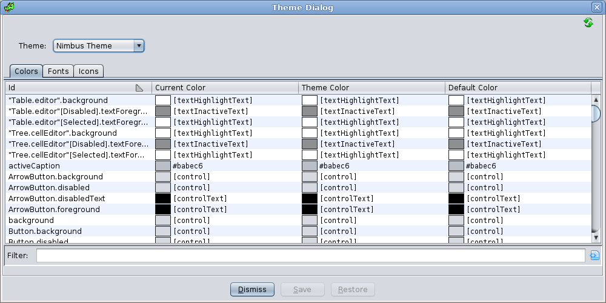

Editing Themes
Description
The Theming feature allows users to customize the colors, fonts, and icons used throughout
the application. The active theme determines the Java Look and Feel, whether the theme should use
light or dark defaults, and any custom colors, fonts, and icons that override the default
values. Users can can easily switch between any of the built-in themes or any saved themes found
in their home application directory
Users can also edit and create their own themes using the Theme Editor. Custom themes are
stored in the user's <home>/.ghidra/.ghidra-<version>/themes directory.
These theme files are simple text files that can
easily be modified using any text editor. Also, users can share themes by exporting them to a
file that can be given to other users who can them import them into their application.
Theme Dialog
The Theme Dialog is the primary means for creating, editing, and saving themes.

The Theme Dialog consists of a theme drop-down and a tabbed set of tables that display the
values for every color property, font property, and icon property defined by either the Java
Look and Feel or the application. All application defined properties start with "color.",
"font.", or "icon.", depending on whether the the property is a color, font, or icon
respectively. All other properties are defined by the Java Look and Feel. This naming
convention is not enforced, thus it is possible that 3rd-party Extensions may introduce
property names that do not match this description. See
the Developer Documentation for more details on the property ID
format and naming conventions.
Each table entry shows the property ID string, the current value, the theme value,
and the default value. Most often, the three values are equal. If the theme value is different
from the default value, that means that the active theme has overridden the default value for
that property. If the current value is different from the theme value, that means the user has
changed that value, but not yet saved the changes back to the theme.
Individual values can be changed by double-clicking the value in the ID or Current Value
column. This will bring up an appropriate editor for changing the value. When editing a value,
the change
takes place immediately in the application so you can see the effect. When you leave the
specific property editor, you have the choice of keeping the change or canceling and having it
revert back to its previous value.
If any values have been changed, the Save button will become enabled, allowing you to save
any changes you have made. (Pressing the Dismiss button will also give the the option to
save.) When saving, if the
current theme is a built-in theme, you will first have to supply a new theme name. If the
current theme is a not a built-in theme, you will have the option to overwrite the existing
theme or supplying a new name to save it as a new theme.
Color Editor
When you double-click on a color value, the Edit Color dialog appears.

Any change you make in the editor is applied to the application immediately. If you press
the OK button, the change will stay. If you press the Cancel button, the color
will revert back to the original color.
Font Editor
When you double-click on a font value, the Edit Font dialog appears.

Any change you make in the editor is applied to the application immediately. If you press
the OK button, the change will stay. If you press the Cancel button, the font
will revert back to the original font.
Icon Editor
When you double-click on an Icon value, the Edit Icon dialog appears.

The Edit Icon dialog has a drop-down text field where you can find any existing icon on
the classpath. If you want to choose an Icon from the file system, press the ... button
and a File Chooser will appear, allowing you to pick an icon file from anywhere on the filesystem.
Any change you make in the editor is applied to the application immediately. If you press the
OK button, the change will stay. If you press the Cancel button, the icon will
revert back to the original icon.
Theme Actions
Switching Themes
To change the current theme, first bring up the Theme Dialog.
The Theme Dialog can be invoked from the main application menu using the
Edit Theme menu. From the Theme
Dialog you can select a theme from the combo box at the top.
Theme menu. From the Theme
Dialog you can select a theme from the combo box at the top.
Modifying Theme Values
All the colors, fonts, and icons that have been registered with the theme API can be
modified using the Theme Dialog. The Theme Dialog can be invoked
from the main application menu using the
EditTheme menu. Choose the
tab for the appropriate type and double-click on the ID column or Current Value column of the
item you want to change. An editor for that type will appear.
Reseting Theme Values
To reset an individual value back to its original theme value, from the
main application menu invoke the Theme Dialog using the Edit Theme menu. Choose the
tab for the appropriate type and right-click on the row of the value you want to reset, then
choose the Restore Value menu item.
Reseting All Theme Values
To reset all values back to the original values established by the current theme, from the
main application menu invoke
the EditTheme Actions Reset Theme Values menu.
Saving Themes
After making changes to one or more theme values, the Theme
Dialog's Save button will be enabled. Pressing the Save button will give
the user the option of creating a new theme or overwriting the current them (if the current
theme is not a built-in theme). Also, users will have the option of saving a theme if they
dismiss the Theme Dialog while there are changes to one or more theme values.
Deleting Themes
To delete a custom saved theme, from the main application menu invoke the
EditTheme Actions Delete Theme... menu. This will bring up a dialog
with a list of themes that can be deleted. Select the theme to delete and press the Ok
button.
Exporting Themes>
To export a theme so that it can be shared with others, from the
main application menu invoke the Edit Theme Actions Export Theme... menu. You will first be asked if
you want to export as a regular theme file or as a Zip file. The Zip file option is useful if
the current theme has icon values that are not included with standard application. In that case,
the Zip file will include those non-standard icon files.
Importing Themes
To import a theme, from the main application menu
invoke the Edit Theme Actions Import
Theme... menu. A file chooser dialog will appear allowing the user to choose a theme file
to import. The selected file can be either a standard theme file or a Zip file containing the
theme file and any non-standard icon files defined by that theme.
Reloading Default Values
This action causes Ghidra to reload all theme default values. It is really only useful
for developers who are actively making changes to theme.properties files. To activate this
action, press the refresh button  in the top
right corner of the Theme Dialog.
in the top
right corner of the Theme Dialog.
Theme Property Names
Theme Property Names (also referred to as IDs or keys) that are defined by the application
use a common format to help make sorting and viewing properties more intuitive as to their use. See
the Developer Documentation for more details on the property ID
format and naming conventions.
Theme Files
Theme Files are used to store saved custom themes. They are simple text files and are
stored in the user's home application directory under
<home>/.ghidra/.ghidra-<version>/themes. The first three properties are always the
theme name, the Look and Feel name, and whether the theme uses standard defaults or dark
defaults. Finally, there is a list of overridden property "name = value" lines. The format
is:
name = [theme name]
Look and Feel = [Look and Feel name]
useDarkDefaults = [true or false]
[theme id 1]= [color, icon, or font value]
[theme id 2]= [color, icon, or font value]
[theme id 3]= [color, icon, or font value]
[theme id 4]= [color, icon, or font value]
...
Example:
name = BigFontTheme
Look and Feel = Nimbus
useDarkDefaults = false
color.bg = Black
color.bg.foo = #012345
[color]Panel.background = Red
font.button = dialog-PLAIN-14
icon.refresh = images/reload3.png
color.bg.bar = color.bg.foo
color.bg.xxx = [color]Panel.background
Each property line is expected to begin with either "color.", "font.", or "icon." Since
java defined properties don't start with these prefixes, they will have "[color]", "[font]",
or "[icon]" prepended to their property name. These brackets are only used to aid in
parsing this file. When the properties are used in Ghidra, the bracketed prefixes are
removed.
Also, note that the values of these properties can reference other property names. If the
right side of the assignment is a property name and not a value, then it must also use the
bracketed prefix if the property name doesn't start with "color.", "font.", or "icon."
Specifying Theme Property Values
Specifying property values varies depending on whether it is a color, font, or icon. Fonts
and icons also support specifying modifiers. For a complete description of how to specify
these values, see the Developer Documentation.
Provided by: Theme Manager
Related Topics